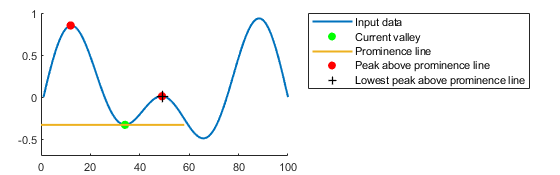

islocalmin
Find local minima
Syntax
Description
TF = islocalmin(A)true) when a local
minimum is detected in the corresponding element of A.
You can use islocalmin functionality interactively by adding
the Find Local
Extrema task to a live script.
TF = islocalmin(___,Name,Value)islocalmin(A,'SamplePoints',t) finds local minima of
A with respect to the time stamps contained in the time
vector t.
[
also returns the prominence corresponding to each element of TF,P] = islocalmin(___)A.
Examples
Compute and plot the local minima of a vector of data.
x = 1:100;
A = (1-cos(2*pi*0.01*x)).*sin(2*pi*0.15*x);
TF = islocalmin(A);
plot(x,A,x(TF),A(TF),'r*')
Create a matrix of data, and compute the local minima for each row.
A = -25*diag(ones(5,1)) + rand(5,5); TF = islocalmin(A,2)
TF = 5×5 logical array
0 0 0 1 0
0 1 0 0 0
0 0 1 0 0
0 0 0 1 0
0 0 1 0 0
Compute the local minima of a vector of data relative to the time stamps in the vector t. Use the MinSeparation parameter to compute minima that are at least 45 minutes apart.
t = hours(linspace(0,3,15)); A = [2 4 6 4 3 7 5 6 5 10 4 -1 -3 -2 0]; TF = islocalmin(A,'MinSeparation',minutes(45),'SamplePoints',t); plot(t,A,t(TF),A(TF),'r*')

Specify a method for indicating consecutive minima values.
Compute the local minima of data that contains consecutive minima values. Indicate the minimum of each flat region based on the first occurrence of that value.
x = 0:0.1:5; A = max(-0.75, sin(pi*x)); TF1 = islocalmin(A,'FlatSelection','first'); plot(x,A,x(TF1),A(TF1),'r*')

Indicate the minimum of each flat region with all occurrences of that value.
TF2 = islocalmin(A,'FlatSelection','all'); plot(x,A,x(TF2),A(TF2),'r*')

Compute the local minima of a vector of data and their prominence, and then plot them with the data.
x = 1:100; A = peaks(100); A = A(50,:); [TF1,P] = islocalmin(A); P(TF1)
ans = 1×2
2.7585 1.7703
plot(x,A,x(TF1),A(TF1),'r*') axis tight

Compute the most prominent minimum in the data by specifying a minimum prominence requirement.
TF2 = islocalmin(A,'MinProminence',2); plot(x,A,x(TF2),A(TF2),'r*') axis tight

Input Arguments
Name-Value Arguments
Output Arguments
Algorithms
islocalmin identifies all local minima (or valleys) in the input
data and follows these steps to compute the prominence of each local minimum. The
prominence of a local minimum measures how the valley stands out with respect to its
height and location relative to other valleys.
Draw a horizontal line to the left and right from the current valley. Stop drawing each segment of the horizontal line when it reaches the edge of the data or intersects the data.
Identify the peaks above the horizontal line.
Use the lowest of those peaks as the basis value. The prominence is the absolute difference between the height of the current local minimum and the basis value.

Alternative Functionality
Live Editor Task
You can use islocalmin functionality interactively by adding
the Find Local
Extrema task to a live script.